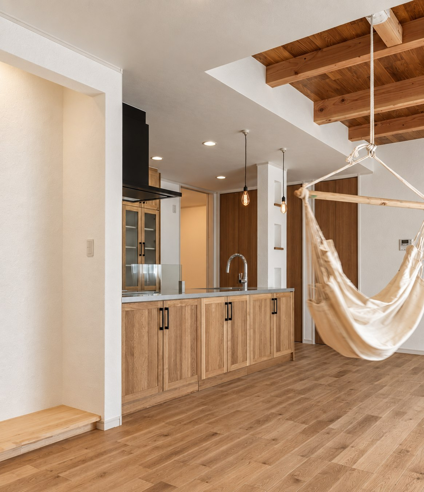
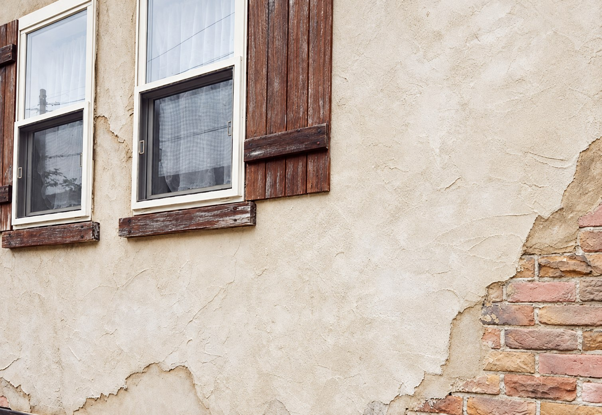
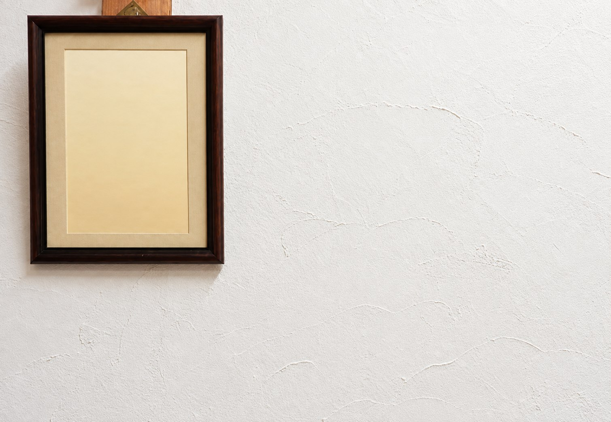
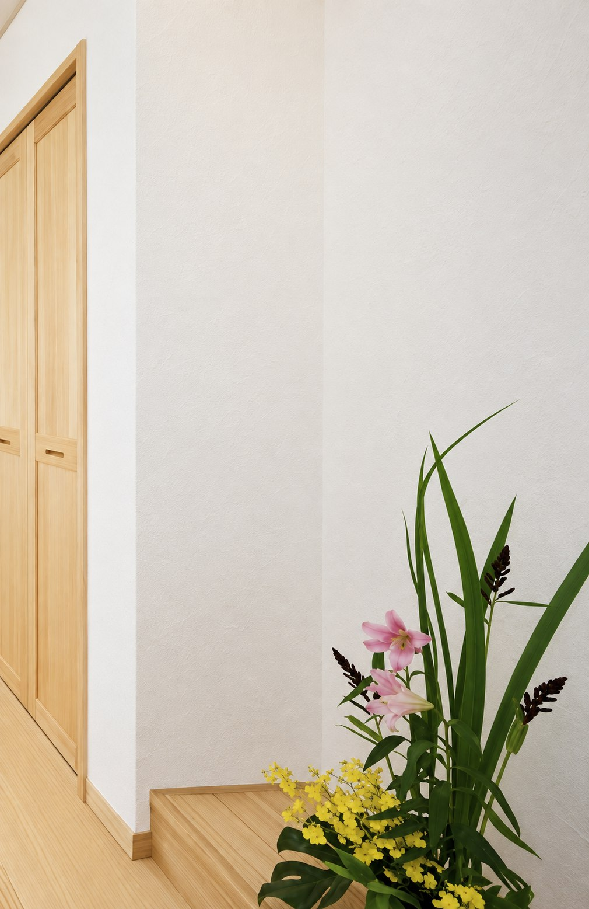
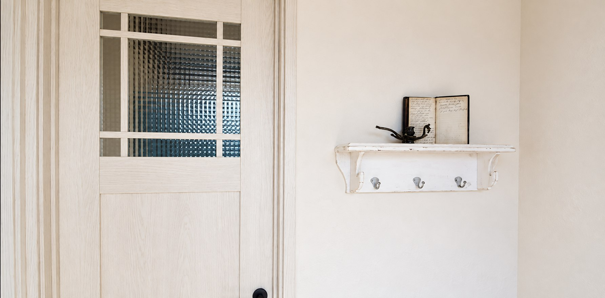

THE SECRET OF SHIKKUI
呼吸する壁、漆喰。
昔から日本の住まいを守ってきた白い壁。自然から生まれ、空気と湿度を穏やかに整える漆喰を、フジ創アイノスは大切な標準素材として考えています。

WHAT IS SHIKKUI?
石から生まれ、ふたたび石へ。
漆喰（しっくい）は、石灰石を加工して作られる消石灰（水酸化カルシウム）に、砂、海藻のり、すさなどを混ぜ、水で練った塗り壁材です。
調湿性・断熱性・防火性・可塑性などに優れ、内外壁や塀、彫塑材にも使われてきました。日本では古くから城や蔵の白壁に用いられ、その明るさと燃えにくさが建物を守ってきたといわれています。


BREATHING WALL
壁が呼吸する、ということ。
漆喰の主原料である消石灰は、空気中の二酸化炭素を取り込みながら、時間をかけて石灰石へと戻り、固まっていきます。
細かな孔を持つ多孔質な塗り壁は、室内の湿気を吸ったり放したりする働きが期待できます。夏の湿気や冬の乾燥、結露を抑え、年間を通した心地よい室内環境を支えます。
SIX BENEFITS
漆喰が暮らしにもたらすこと。

- 01調湿効果
- 多孔質な素材が湿気を吸放出し、室内の湿度を穏やかに整えます。
- 02消臭効果
- 生活の中で生まれるにおいや有害物質を吸着し、空気を清潔に保つ働きが期待できます。
- 03抗菌・防カビ
- 強アルカリ性という漆喰の性質が、細菌やカビの発生を抑えます。
- 04耐火性能
- 漆喰は不燃性の壁材で、燃焼時に有毒ガスを発生しにくい素材です。
- 05堅牢性
- 時間とともに硬化が進み、耐久性が増していくのも漆喰の特徴です。
- 06吸音性
- 多孔質な構造が音をやわらげ、落ち着いた室内環境を支えます。
NATURAL MATERIALS
大切な家族が、毎日触れるものだから。
住宅の高気密・高断熱化が進む一方、化学物質を含む建材による室内環境への影響も考える必要があります。
フジ創アイノスは、家を建てた方が安心して健やかに暮らせるよう、漆喰や無垢材をはじめとする自然素材にこだわった家づくりを続けています。
自然素材の家を相談する →